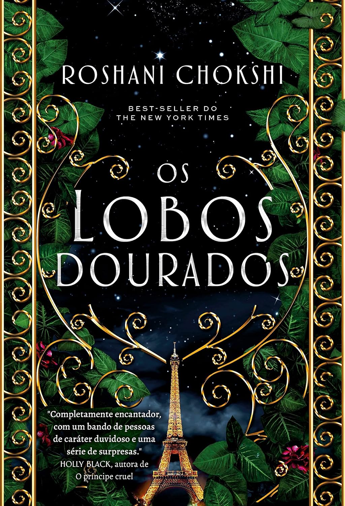
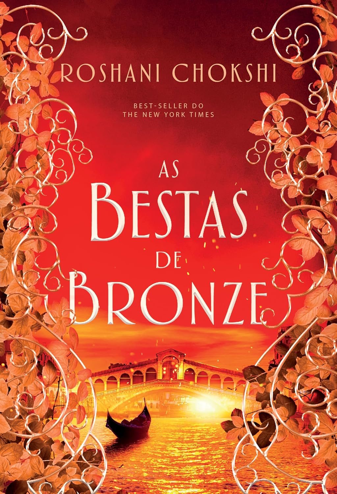

Resumo do livro:
Os Lobos Prateados é uma continuação eletrizante que aprofunda a mística dos metamorfos em uma
trama de alta tensão e romance proibido. A genialidade de Sophie Jordan reside em equilibrar o perigo das intrigas palacianas
com o magnetismo visceral entre os protagonistas, cujas lealdades são testadas em uma jornada de sobrevivência. É uma leitura
viciante que utiliza a fantasia como cenário para explorar sacrifícios e a busca pelo trono, entregando uma narrativa ágil e
impactante que consolida a obra como uma peça essencial para os amantes de romances épicos e sobrenaturais.

Resumo do livro:
As Serpentes Prateadas e uma continuacao absolutamente brilhante que mergulha em uma busca
sombria e eletrizante pela imortalidade nas paisagens geladas da Russia. A escrita de Roshani Chokshi e poetica e viciante
elevando o nivel da historia original enquanto acompanhamos Severin e sua equipe em um jogo perigoso de traicoes segredos e
artefatos antigos. E um livro excepcional que equilibra perfeitamente um ritmo de tirar o folego com um desenvolvimento
emocional profundo e doloroso dos personagens tornando a leitura uma experiencia impossivel de largar e um verdadeiro deleite
para quem ama fantasias ricas e bem construidas.

Resumo do livro:
As Bestas de Bronze é a conclusão magistral e emocional da trilogia que funde história e magia
em uma Veneza sombria e fascinante. A genialidade de Roshani Chokshi brilha ao explorar o custo da ambição e o peso da mortalidade,
enquanto o grupo de párias enfrenta sua missão mais perigosa para impedir uma ascensão divina e salvar um dos seus. É uma leitura
arrebatadora que equilibra enigmas complexos com a vulnerabilidade dos laços de amizade, entregando um desfecho épico onde o
sacrifício e a redenção se encontram em um clímax inesquecível.